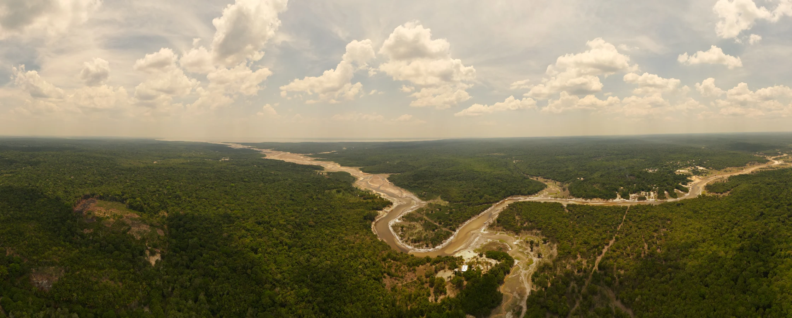

Educação e território Manaus, AM
Mapeamento Rural
Ribeirinho
Conheça o levantamento geoespacial do transporte escolar ribeirinho, das expedições fluviais aos caminhos percorridos para chegar à escola.
01 O território em perspectiva
Em focoExpedições fluviais
Acompanhe as viagens pelos rios Negro e Amazonas e conheça a rotina de quem mapeou os caminhos até a escola.
Ler a publicação em destaque ↗acervo do projeto
02 O projeto
Os caminhos
até a escola.
O Mapeamento Rural Ribeirinho é um projeto da Secretaria Municipal de Educação de Manaus, elaborado pela DGTI Geotecnologia. O levantamento reúne registros sobre o transporte escolar nas comunidades ribeirinhas e sobre as condições de acesso às escolas.
O acervo acompanha a equipe durante a navegação e as visitas. As publicações mostram os pontos de apoio, os desafios observados no percurso e o trabalho de conferência das informações de campo.
Rotas escolares
Navegação, embarques e trechos de acesso às escolas.
Trabalho de campo
Visitas, registros de viagem e rotina da equipe.
Logística fluvial
Embarcações, pontos de apoio e organização dos deslocamentos.
03 Atlas
Cada história,
um lugar.
Explore os dois rios e encontre as publicações ligadas a cada região. Os marcadores são referências aproximadas: não indicam rotas navegadas, escolas ou pontos coletados em campo.
Carregando mapa de referência…
04 Acervo do projeto
Leituras de um
território vivo.
Filtre por tema ou busque pelo nome de uma expedição, comunidade ou atividade.